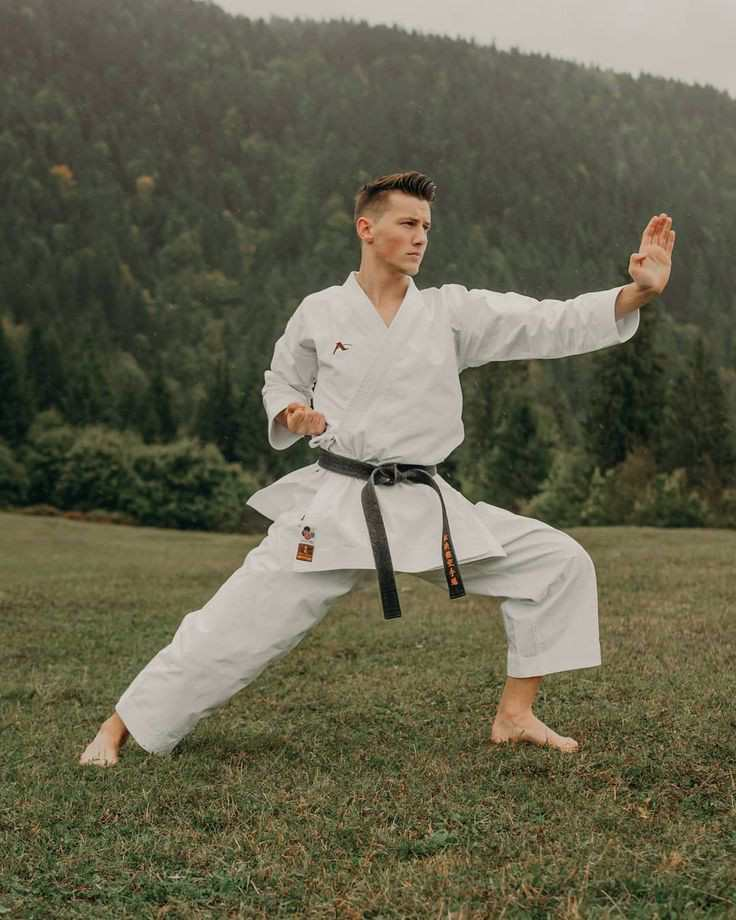
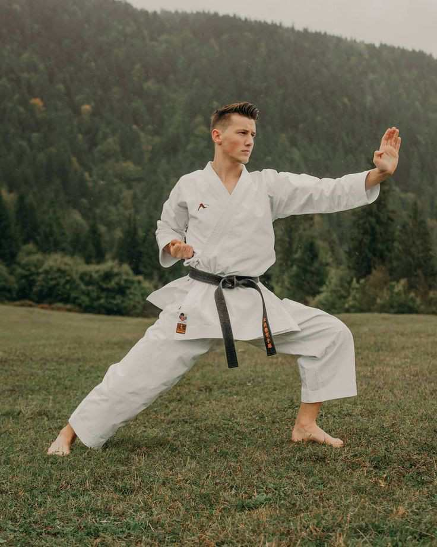
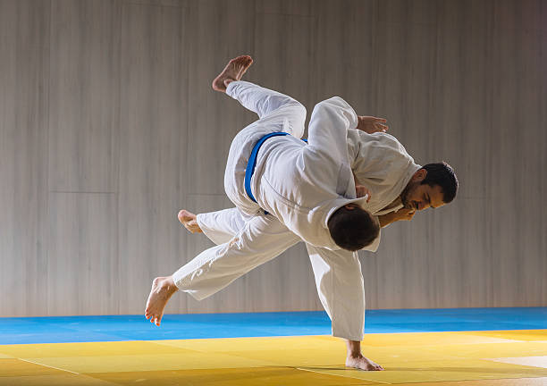
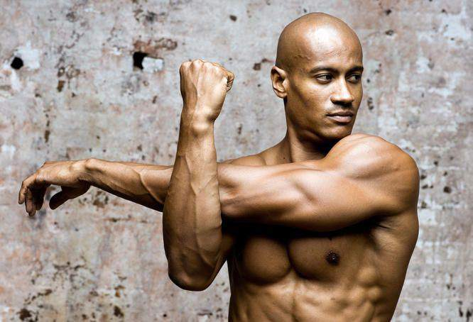
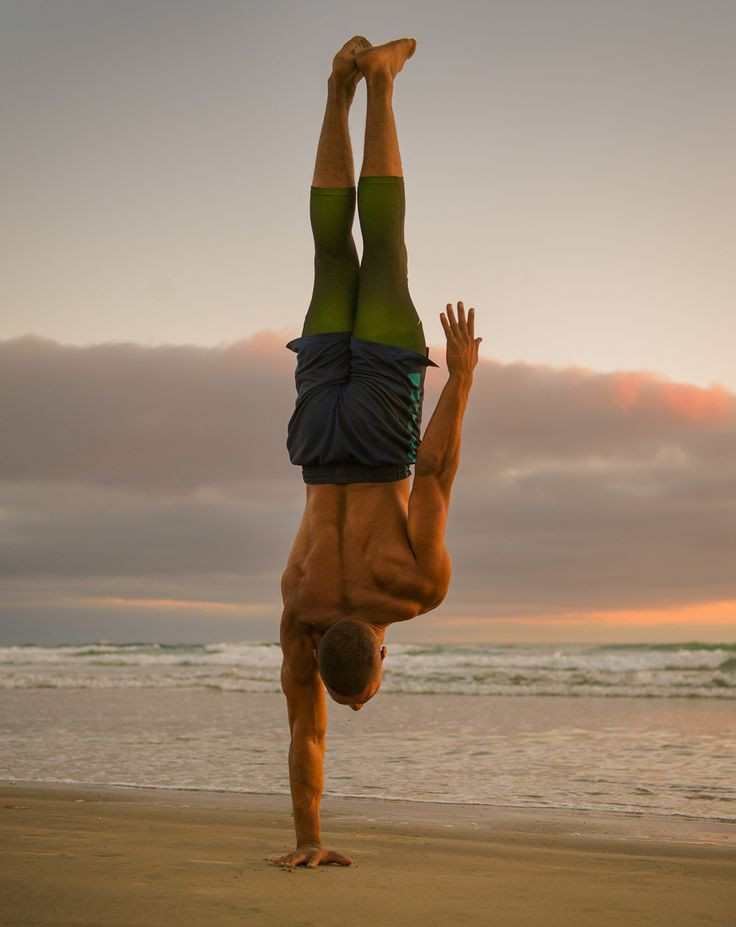

Understanding Karate
Karate is a martial art developed in the Ryukyu Kingdom. It emphasizes striking techniques...
Karate is a martial art developed in the Ryukyu Kingdom. It emphasizes striking techniques...
Judo is a modern martial art, combat, and Olympic sport that focuses on throwing and grappling...
Martial arts encompass a variety of combat practices and traditions. They can be used for self-defense, competition, physical fitness, and mental discipline.
Warming up is crucial for preventing injuries and improving performance. Learn effective warm-up routines...
 Read MoreFrom basic stances to advanced moves, discover the techniques that can elevate your martial arts skills...
 Read More